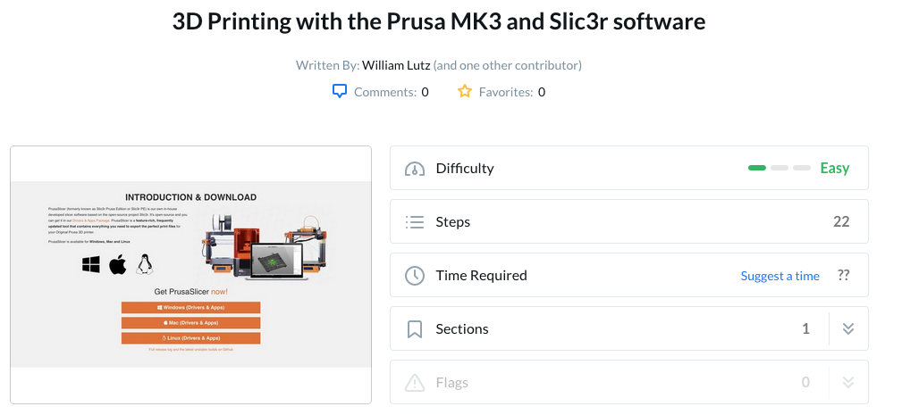
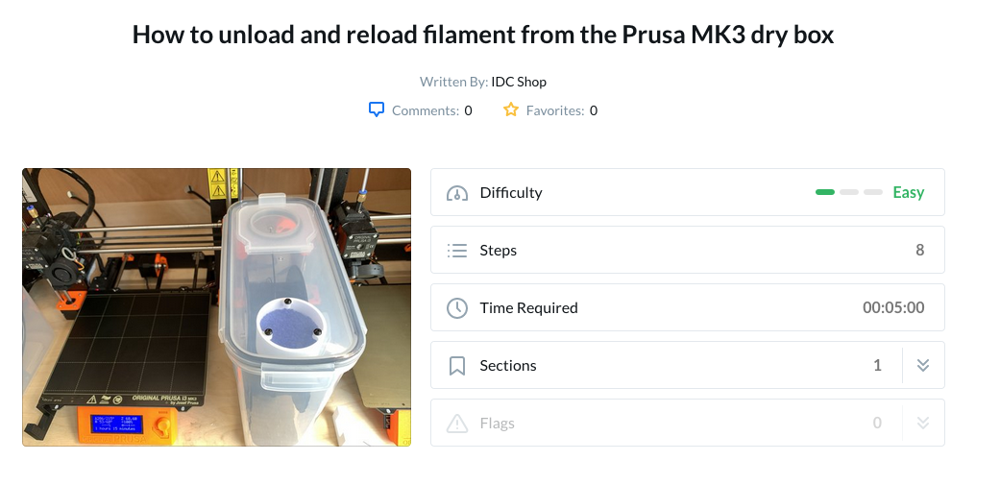
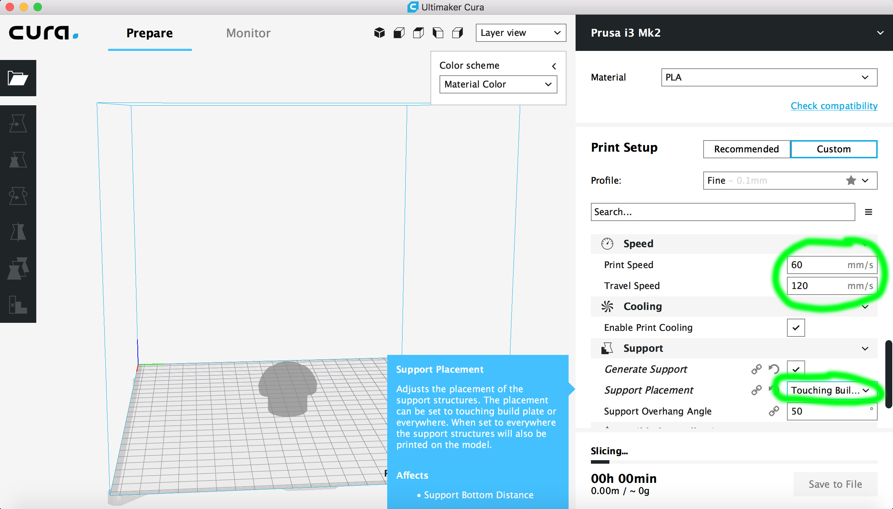
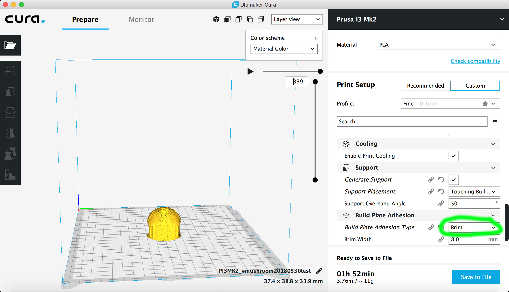

6.810 Engineering Interactive Technologies (fall 2020)
3D Printing: Slicing
The IDC has tutorials specific for their setup on their website.
Click the image below to go to the tutorials for the Prusa 3D Printer.

.
Below we also show our own version for Prusa 3D Printer, but when in doubt please use the tutorials linked above since the IDC may have updated their setup.
Install the Slicing Program (Cura)
Setup the Slicer Cura for the 3D Printer Prusa i3 Mk2 (IDC printers)
- open Cura, click on the black bar in the top right corner that says Ultimaker
- select 'Add Printers'
- in the popup, click on 'others'
- scroll down the list until you see the 'Prusa i3 Mk2'
- the black bar should now say 'Prusa i3 Mk2'
- switch to custom settings and change the profile to Low Quality - .15mm
- scroll down in the settings and set the Printing Temperature to 210C
- scroll down and check that the print speed says 60mm/s and travel speed (print head moving but not extruding) is set to 120mm/s
- finally, scroll down and change the support placement to say 'touching the build plate' (support will only be generate where you have a chance to actually break it off and not inside in small holes)


Slice your 3D Model
- now load your 3D model into Cura (just drag the stl file onto the build plate
- the red areas show you where support material will be generated eventually
- switch from 'Solid View' to 'Layer View'
- this will start the slicing process (takes a few minutes) and will show you the support material, the time it will take for printing etc.
- you can use the 'move' and 'scale' functionality on the left side to position your model on the build plate (in case you want to print multiple things) and change the size of your model (in case you want to save time)
Export your sliced model for 3D Printing
- go to File -> Save As
- save as .gcode file